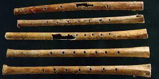

- 1. Hogyan kezdődött? – Elméletek a zene születéséről
- Mivel a hanghullámok nem hagynak maguk után fosszíliákat, a tudósok, antropológusok és zenetörténészek több elméletet is kidolgoztak a zene kezdetéről:
- A beszéd előtti nyelv: Charles Darwin szerint a zene az emberi beszéd kialakulása előtt született. Az ősemberek a hangterjedelmük és a hangszínük változtatásával fejezték ki érzelmeiket – félelmet, örömöt vagy vonzalmat –, hasonlóan az állatvilág udvarlási rituáléihoz.
- A természet utánzása: Az ősember környezetéből merített ihletet: a madarak éneke, a szél zúgása, az eső kopogása vagy a vizek csobogása mind mintaként szolgált a saját hangképzéséhez.
- Közös munkavégzés és ritmus: A közös munka – például a magvak őrlése, a vadászat vagy a gyűjtögetés – során az egyenletes ritmus segített az erők összehangolásában és a csapatszellem erősítésében.
- Rituálék és mágia: A zene szorosan összefüggött a törzsi rituálékkal, a gyógyítással és a természetfeletti erőkkel való kapcsolatteremtéssel. A dobok ritmusa extatikus állapotot idézett elő, amely összekovácsolta a közösséget.

- 2. Az első „hangszer”: Az emberi test
- Mielőtt az ember bármilyen tárgyat megmunkált volna, a saját teste szolgált hangszerként:
- A hangszalagok adták a dallamot (dúdolás, kiáltás, skandálás).
- A taps, a mellkasütögetés és a dobogás adta a ritmust.
- A testritmus volt az az alap, amelyre később a külső eszközökkel megszólaltatott hangok épültek.
- 3. Az első feljegyzett dallamok
- A zene évezredeken át szájhagyomány útján öröklődött. Az első írásos zenei emlékekre az ókori civilizációk megjelenéséig kellett várni:
- A Hurri himnusz (i. e. 1400 körül): A mai Szíria területén található Ugaritból került elő az a cseréptábla, amely a világ legrégebbi lejegyzett dallamát tartalmazza (a Nikkal istennőhöz szóló himnuszt).
- Seikilos sírverse (i. sz. 1. század): Az ókori Görögországból származó mementó a legrégebbi teljesen fennmaradt zenemű, amelyet egy sírkőre vésve találtak meg, kottával és dalszöveggel együtt.
- Összegzés
- A zene nem egyetlen ember vagy kultúra találmánya: egyidős az emberiséggel. Biológiai és szociális szükségletként született meg, hogy összekössön minket egymással és a körülöttünk lévő világgal. Bár a hangszerek és a technológia az évezredek során folyamatosan fejlődtek, a zene alapvető célja ma is ugyanaz, mint 40 000 évvel ezelőtt: az érzések átadása és a közösségteremtés.